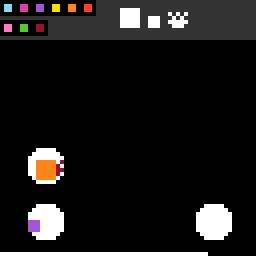

su15
Click to move and merge pieces until everything to be handed in lands inside the rings.
9 levels · 16 rules · all levels replayed in Lean
Replay
The certified run that cleared every level, one action at a time. Beside each step: the rules of the model that explain it; they are also marked in the rule list below.

Explained by
Press Play or step to load the run. Keys, while the player is on screen: ← → step, Space play / pause. A click is circled; cells that changed are outlined.
How it plays
The squares on the board are graded by size and called pieces; the top draws what this level must hand in, and the field has rings. Click a place on the board: if there is only one piece within range, it jumps to the click; if there are two pieces of the same level, they merge into one piece one level higher, landing at the click. Then the hunters, diamonds and crabs on the field move in small steps, each small step toward the piece nearest to it at that moment; whichever piece it presses on, it bites down one level and flings far away, and the smallest piece is gone when bitten. The new piece just merged in this move cannot be bitten. When everything to be handed in lands whole inside the rings, the level is cleared; in some levels what must be handed in also includes diamonds or crabs. The bottom row is the budget, which shortens at every click on the board, and the game ends when it is deducted to zero.

Model
The final model: 5 object types and 16 rules. Each rule is a Python check against every recorded step; 12 of them are translated into Lean (the paper's per-game table). Code under a rule is the file of the same name in the agent's Lean project.
Object types
- Pieces
piecesSquares on the board graded by size; each has a level and top-left position.Lean · Piece.lean
-- World.pieces : List Piece structure Piece where tier : Nat row : Int col : Int deriving DecidableEq, Repr, Inhabited - Creatures
creaturesHunters, diamonds, and crabs, which move by themselves after each board click.Lean · Creature.lean
-- World.creatures : List Creature structure Creature where kind : Nat row : Int col : Int deriving DecidableEq, Repr, Inhabited - Board
boardRing positions and what this level must hand in; fixed within a level.Lean · Board.lean
import Obj.Board.Ring import Obj.Board.Sample namespace Game structure Board where rings : List Ring samples : List Sample deriving DecidableEq, Repr, Inhabited end Game - Budget
budgetCells left in the bottom row; each board click shortens it.Lean · World.lean
-- World.budget : Nat structure World where pieces : List Piece creatures : List Creature budget : Nat deriving DecidableEq, Repr, Inhabited - Hidden creatures
hiddenCreatures fully under a piece; unseen on screen, known only from the model's earlier steps.Lean · Creature.lean
-- State.hidden : List Creature structure Creature where kind : Nat row : Int col : Int deriving DecidableEq, Repr, Inhabited
Rules
click_lands_freshA board click moves the one piece in range there, or merges two same-level pieces.Python
from __future__ import annotations from derive.click import click_cell, in_reach, resolve from rule._scope import board_step HISTORY = [ … … … ] def scope_(w, action, nw, ctx): why = board_step(w, action, nw, ctx) if why: return why near = in_reach(w.pieces, click_cell(action)) if not near: … if len(near) > 2: … if len({p.tier for p in near}) != 1: … if len(near) == 2 and near[0].tier >= 6: … return None def assert_(w, action, nw, ctx) -> bool: cell = click_cell(action) near = in_reach(w.pieces, cell) q = resolve(list(w.pieces), cell).fresh return q in nw.pieces and all(p not in nw.pieces or p == q for p in near)Lean · LandsFresh.lean
import Obj.World namespace Game def reach2 (p : Piece) (r c : Int) : Int := let dr := max (max (p.row - r) 0) (r - (p.row + p.sideI - 1)) let dc := max (max (p.col - c) 0) (c - (p.col + p.sideI - 1)) dr * dr + dc * dc def inReach (ps : List Piece) (r c : Int) : List Piece := ps.filter (fun p => decide (reach2 p r c ≤ 64)) def placedRow (s r : Int) : Int := min (max (r - s / 2) 10) (63 - s + 1) def placedCol (s c : Int) : Int := min (max (c - s / 2) 0) (64 - s) def placedPiece (t : Nat) (r c : Int) : Piece := ⟨t, placedRow (side t : Int) r, placedCol (side t : Int) c⟩ structure Resolved where pieces : List Piece fresh : Option Piece deriving DecidableEq, Repr def resolve (ps : List Piece) (r c : Int) : Option Resolved := match inReach ps r c with | [] => some ⟨ps, none⟩ | [p] => let q := placedPiece p.tier r c some ⟨ps.map (fun z => if z = p then q else z), some q⟩ | [a, b] => if a.tier = b.tier ∧ a.tier < 6 then let q := placedPiece (a.tier + 1) r c some ⟨(ps.filter (fun z => z ≠ a ∧ z ≠ b)) ++ [q], some q⟩ else some ⟨ps, none⟩ | _ => none def ident (ps : List Piece) (r c : Int) (res : Resolved) (p : Piece) : Piece := if p ∈ inReach ps r c then res.fresh.getD p else p end Gameclick_top_band_inertClicking the top strip of the screen changes nothing.Python
from __future__ import annotations from rule._scope import not_click, next_is_elsewhere from derive.click import click_cell HISTORY = [ … ] … def scope_(w, action, nw, ctx): why = not_click(action) or next_is_elsewhere(ctx) if why: return why if click_cell(action)[0] >= 10: … return None def assert_(w, action, nw, ctx) -> bool: return nw == wLean · TopBandInert.lean
import Obj.World namespace Game def isTopBand (r : Int) : Bool := decide (r < 10) end Gamecreature_chases_targetA creature far from the click steps toward its nearest piece each small step.Python
from __future__ import annotations from derive.step import plan from rule._scope import board_step HISTORY = [ … … … … … … … … … … … … … … … … … … … … … … … … … … … … … … … … … … … … … … ] def scope_(w, action, nw, ctx): why = board_step(w, action, nw, ctx) if why: return why if not w.creatures and not w.hidden: … p = plan(w, action, ctx["level"]) if p.outcome.kind == "na": … if p.outcome.kind == "won": … if not any(m.mode == "chase" for m in p.movers): … return None def assert_(w, action, nw, ctx) -> bool: p = plan(w, action, ctx["level"]) seen = p.outcome.world.creatures return all(m.c in nw.creatures for m in p.movers if m.mode == "chase" and m.c in seen)Lean · Chase.lean
import Obj.World namespace Game def cCentre (c : Creature) : Int × Int := (c.row * 104 + rowOff c.kind, c.col * 104 + 208) def pCentre (p : Piece) : Int × Int := (p.row * 104 + (p.sideI - 1) * 52, p.col * 104 + (p.sideI - 1) * 52) def dist2 (a b : Int × Int) : Int := (a.1 - b.1) * (a.1 - b.1) + (a.2 - b.2) * (a.2 - b.2) def sgn (d : Int) : Int := if 52 ≤ d then 1 else if d < -52 then -1 else 0 def touches (c : Creature) (p : Piece) : Bool := decide (p.row < c.row + 4) && decide (c.row < p.row + p.sideI) && decide (p.col < c.col + 5) && decide (c.col < p.col + p.sideI) def place (k : Nat) (r c : Int) : Creature := ⟨k, min (max r 10) 60, min (max c 0) 59⟩ def clampI (x lo hi : Int) : Int := max lo (min hi x) def slideAt (a b : Int × Int) (i : Nat) : Int × Int := (a.1 + clampI (b.1 - a.1) (-(416 * (i : Int))) (416 * (i : Int)), a.2 + clampI (b.2 - a.2) (-(416 * (i : Int))) (416 * (i : Int))) structure Cand where src : Piece dest : Piece centre : Int × Int arrived : Bool deriving DecidableEq, Repr def Cand.at (k : Cand) : Piece := ⟨k.dest.tier, (k.centre.1 - (k.dest.sideI - 1) * 52) / 104, (k.centre.2 - (k.dest.sideI - 1) * 52) / 104⟩ def cands (srcs : List Piece) (dst : Piece → Piece) (i : Nat) : List Cand := srcs.map (fun p => let x := slideAt (pCentre p) (pCentre (dst p)) i ⟨p, dst p, x, x == pCentre (dst p)⟩) def nearest (cc : Int × Int) : List Cand → Option Cand | [] => none | k :: ks => some (ks.foldl (fun best x => if dist2 cc x.centre < dist2 cc best.centre then x else best) k) def pickPoint (c : Creature) : Int × Int := (c.row * 104 + 208, c.col * 104 + 208) def Cand.still (k : Cand) : Bool := k.src == k.dest def choose (prev : Option Cand) (cs : List Cand) (best : Cand) : Cand := match prev with | some p => if p.still && best.still then (cs.find? (fun k => k.src == p.src)).getD best else best | none => best def speed : Nat → Int | 13 => 2 | _ => 1 def chase (prev : Option Cand) (c : Creature) (cs : List Cand) : Option (Creature × Cand × Bool) := match nearest (pickPoint c) cs with | none => none | some b => let t := choose prev cs b let sr := sgn (t.centre.1 - (cCentre c).1) let sc := sgn (t.centre.2 - (cCentre c).2) if sr = 0 ∧ sc = 0 then some (c, t, true) else some (place c.kind (c.row + speed c.kind * sr) (c.col + speed c.kind * sc), t, false) def chaseRun (srcs : List Piece) (dst : Piece → Piece) : Nat → Nat → Option Cand → Creature → Creature | 0, _, _, c => c | n + 1, i, prev, c => match chase prev c (cands srcs dst i) with | none => c | some (c', t, stop) => if stop then c' else chaseRun srcs dst n (i + 1) (some t) c' end Gamecreature_dashes_near_clickCreatures near the click do not chase: hunters dash to it, diamonds pounce onto it.Python
from __future__ import annotations from derive.step import plan from rule._scope import board_step HISTORY = [ … … … … … … … … … … … … … … … … … … … … … … … … ] def scope_(w, action, nw, ctx): why = board_step(w, action, nw, ctx) if why: return why if not w.creatures and not w.hidden: … p = plan(w, action, ctx["level"]) if p.outcome.kind == "na": … if p.outcome.kind == "won": … if not any(m.mode in ("dash", "pounce") for m in p.movers): … return None def assert_(w, action, nw, ctx) -> bool: p = plan(w, action, ctx["level"]) seen = p.outcome.world.creatures return all(m.c in nw.creatures for m in p.movers if m.mode in ("dash", "pounce") and m.c in seen)Lean · Dash.lean
import Rule.Creature.Bite namespace Game def nearClick (c : Creature) (r x : Int) : Bool := let dr := max (max (c.row - r) 0) (r - (c.row + 3)) let dc := max (max (c.col - x) 0) (x - (c.col + 4)) decide (dr * dr + dc * dc ≤ 64) def roundDash (d l2 : Int) : Int := match (List.range 9).find? (fun (i : Nat) => leMulSqrt (5 * (2 * ((i : Int) - 4) - 1)) l2 (34 * d) && !(leMulSqrt (5 * (2 * ((i : Int) - 4) + 1)) l2 (34 * d))) with | some i => (i : Int) - 4 | none => 0 def dashV (c : Creature) (r x : Int) : Int × Int := let dy := r * 104 - (pickPoint c).1 let dx := x * 104 - (pickPoint c).2 let l2 := dy * dy + dx * dx if l2 = 0 then (0, 0) else (roundDash dy l2, roundDash dx l2) def pounceV (c : Creature) (r x : Int) : Int × Int := ((r * 104 - (cCentre c).1 + 52) / 104, (x * 104 - (cCentre c).2 + 52) / 104) end Gamecreatures_merge_on_overlapTwo touching creatures of a kind merge: hunters into a diamond, diamonds into a crab.Python
from __future__ import annotations from derive.step import plan from rule._scope import board_step HISTORY = [ … … … … … … … … … … … … … … ] def scope_(w, action, nw, ctx): why = board_step(w, action, nw, ctx) if why: return why if len(w.creatures) + len(w.hidden) < 2: … p = plan(w, action, ctx["level"]) if p.outcome.kind == "na": … if p.outcome.kind == "won": … if not any(m.mode == "born" for m in p.movers): … return None def assert_(w, action, nw, ctx) -> bool: p = plan(w, action, ctx["level"]) seen = p.outcome.world.creatures return all(m.c in nw.creatures for m in p.movers if m.mode == "born" and m.c in seen)Lean · Merge.lean
import Rule.Creature.Chase namespace Game def upKind : Nat → Nat | 7 => 14 | 14 => 13 | _ => 0 def canMerge (a b : Creature) : Bool := a.kind == b.kind && (a.kind == 7 || a.kind == 14) && decide (a.row - b.row < 4) && decide (b.row - a.row < 4) && decide (a.col - b.col < 5) && decide (b.col - a.col < 5) def bornAt (a b : Creature) : Creature := ⟨upKind a.kind, (a.row + b.row) / 2, (a.col + b.col) / 2⟩ end Gamebite_demotes_and_flingsA chasing creature hitting an older piece bites it one level down and flings it.Python
from __future__ import annotations from derive.step import plan from rule._scope import board_step HISTORY = [ … … … … … … … … … … … … … … … … … … … … … … … … … ] def scope_(w, action, nw, ctx): why = board_step(w, action, nw, ctx) if why: return why if not w.creatures and not w.hidden: … p = plan(w, action, ctx["level"]) if p.outcome.kind == "na": … if p.outcome.kind == "won": … if not p.bites: … return None def assert_(w, action, nw, ctx) -> bool: p = plan(w, action, ctx["level"]) for old, _, q, _ in p.bites: if old in nw.pieces: return False if q is not None and q not in nw.pieces: return False return TrueLean · Bite.lean
import Rule.Creature.Chase namespace Game def leMulSqrt (a l2 b : Int) : Bool := if a ≤ 0 ∧ 0 ≤ b then true else if 0 < a ∧ b < 0 then false else if 0 ≤ a then decide (a * a * l2 ≤ b * b) else decide (b * b ≤ a * a * l2) def roundRatio (v l2 : Int) : Int := match (List.range 21).find? (fun (i : Nat) => leMulSqrt (2 * ((i : Int) - 10) - 1) l2 (20 * v) && !(leMulSqrt (2 * ((i : Int) - 10) + 1) l2 (20 * v))) with | some i => (i : Int) - 10 | none => 0 def bitten (p : Piece) (c : Creature) : Option Piece := if p.tier ≤ 1 then none else let dy := (p.row + p.sideI / 2) - (c.row + 2) let dx := (p.col + p.sideI / 2) - (c.col + 2) let l2 := dy * dy + dx * dx let sr := if l2 = 0 then -10 else roundRatio dy l2 let sc := if l2 = 0 then 0 else roundRatio dx l2 let s : Int := (side (p.tier - 1) : Int) some ⟨p.tier - 1, min (max (p.row + sr) 10) (63 - s + 1), min (max (p.col + sc) 0) (64 - s)⟩ end Gamelevelup_iff_covered_after_stepThe level clears if, at any small step, everything to hand in lies in rings.Python
from __future__ import annotations from derive.step import step from rule._scope import not_board_click, refused HISTORY = [ … … … … … … … … … … … … … ] def scope_(w, action, nw, ctx): why = not_board_click(action) if why: return why if "game_over" in ctx.get("marks", ()): … if refused(w, nw, ctx) and "level_up" not in ctx.get("marks", ()): … o = step(w, action, ctx["level"]) if o.kind == "na": … return None def assert_(w, action, nw, ctx) -> bool: o = step(w, action, ctx["level"]) won = "level_up" in ctx.get("marks", ()) or "win" in ctx.get("marks", ()) return (o.kind == "won") == wonLean · Covered.lean
import Rule.Creature.Chase namespace Game structure Thing where isPiece : Bool grade : Nat inRing : Bool def pieceCells (p : Piece) : List (Int × Int) := (List.range (side p.tier)).flatMap (fun (i : Nat) => (List.range (side p.tier)).map (fun (j : Nat) => (p.row + (i : Int), p.col + (j : Int)))) def insideSome (cells : List (Int × Int)) (rs : List Ring) : Bool := rs.any (fun r => cells.all (fun x => r.boxHas x.1 x.2)) def centreInside (c : Creature) (rs : List Ring) : Bool := rs.any (fun r => decide (r.row * 104 ≤ (cCentre c).1) && decide ((cCentre c).1 ≤ (r.row + 8) * 104) && decide (r.col * 104 ≤ (cCentre c).2) && decide ((cCentre c).2 ≤ (r.col + 8) * 104)) def things (rs : List Ring) (ps : List Piece) (cs : List Creature) : List Thing := ps.map (fun p => ⟨true, p.tier, insideSome (pieceCells p) rs⟩) ++ cs.map (fun c => ⟨false, c.kind, centreInside c rs⟩) def picks {α : Type} : List α → List (α × List α) | [] => [] | x :: xs => (x, xs) :: (picks xs).map (fun p => (p.1, x :: p.2)) def matchAll : List Sample → List Thing → Bool | [], _ => true | s :: ss, ts => (picks ts).any (fun p => p.1.isPiece == s.isPiece && p.1.grade == s.grade && p.1.inRing && matchAll ss p.2) def covered (b : Board) (ps : List Piece) (cs : List Creature) : Bool := !b.samples.isEmpty && matchAll b.samples (things b.rings ps cs) end Gamebudget_step_costThe budget shrinks in proportion to steps taken; only board clicks count as steps.Python
from __future__ import annotations from derive.click import click_cell from rule._scope import delta_steps, next_is_elsewhere HISTORY = [ … … … … … … ] def scope_(w, action, nw, ctx): if action == "RESET": return "RESET" why = next_is_elsewhere(ctx) if why: return why if action != "ACTION7" and click_cell(action) is None: … return None def assert_(w, action, nw, ctx) -> bool: d = delta_steps(w, nw, ctx) if d is None: return False if action == "ACTION7" or click_cell(action)[0] < 10: return d == 0 return d == 1 or d == 2 * (ctx["refusals_before"] + 1)Lean · StepCost.lean
import Obj.World namespace Game def barOf (k n : Nat) : Nat := 64 - (64 * k) / n def stepsOf (bar n : Nat) : Option Nat := (List.range (n + 1)).find? (fun k => barOf k n == bar) def nextBar (bar n : Nat) : Option Nat := (stepsOf bar n).map (fun k => barOf (k + 1) n) def refusedBar (bar n r : Nat) : Option Nat := (stepsOf bar n).map (fun k => barOf (k + 2 * (r + 1)) n) end Gamebudget_game_over_at_zeroThe game ends exactly on the step that brings the budget to zero.Python
from __future__ import annotations from derive.budget import N_OF_LEVEL, bar_of, steps_of from derive.click import click_cell HISTORY = [ … … ] def scope_(w, action, nw, ctx): if action in ("RESET", "ACTION7"): … cell = click_cell(action) if cell is None: … if cell[0] < 10: … m = ctx.get("marks", ()) if "level_up" in m or "win" in m: … n = N_OF_LEVEL.get(ctx.get("level")) if n is None or steps_of(w.budget, n) is None: … return None def assert_(w, action, nw, ctx) -> bool: n = N_OF_LEVEL[ctx["level"]] empty = bar_of(steps_of(w.budget, n) + 1, n) == 0 return empty == ("game_over" in ctx.get("marks", ()))Lean · GameOverAtZero.lean
import Obj.World namespace Game def overAt (bar : Nat) : Bool := bar == 0 end Gamepieces_out_of_reach_stay_or_bittenPieces out of range either stay put or get bitten.Python
from __future__ import annotations from derive.click import click_cell, in_reach from rule._scope import board_step HISTORY = [ … … ] def scope_(w, action, nw, ctx): return board_step(w, action, nw, ctx) def assert_(w, action, nw, ctx) -> bool: near = set(in_reach(w.pieces, click_cell(action))) far = [p for p in w.pieces if p not in near] gone = [p for p in far if p not in nw.pieces] born = [q for q in nw.pieces if q not in w.pieces] spare = list(born) if near: tiers = {p.tier for p in near} | {p.tier + 1 for p in near} cand = [q for q in spare if q.tier in tiers] if cand: spare.remove(cand[0]) for p in gone: if p.tier == 1: continue cand = [q for q in spare if q.tier == p.tier - 1] if not cand: return False spare.remove(cand[0]) return not spareLean · OutOfReach.lean
import Rule.Click.LandsFresh namespace Game theorem resolve_keeps_far (ps : List Piece) (r c : Int) (res : Resolved) (p : Piece) (h : resolve ps r c = some res) (hp : p ∈ ps) (hfar : 64 < reach2 p r c) : p ∈ res.pieces := by have hnot : ∀ q, q ∈ inReach ps r c → q ≠ p := by intro q hq heq subst heq simp [inReach, List.mem_filter] at hq omega unfold resolve at h split at h · simp only [Option.some.injEq] at h subst h exact hp · rename_i q hq simp only [Option.some.injEq] at h subst h have hne : q ≠ p := hnot q (by rw [hq]; simp) simp only [List.mem_map] exact ⟨p, hp, by simp [Ne.symm hne]⟩ · rename_i a b hab have hna : a ≠ p := hnot a (by rw [hab]; simp) have hnb : b ≠ p := hnot b (by rw [hab]; simp) split at h · simp only [Option.some.injEq] at h subst h simp only [List.mem_append, List.mem_filter] left exact ⟨hp, by simp [Ne.symm hna, Ne.symm hnb]⟩ · simp only [Option.some.injEq] at h subst h exact hp · simp at h end Gamecreature_step_boundedA creature far from the click moves at most its chase steps per axis.Python
from __future__ import annotations from derive.creature import near_click from derive.creature.chase import SPEED from derive.click import click_cell from rule._scope import board_step HISTORY = [ … … … … … … … ] def _kinds(ws): out = {} for c in ws: out[c.kind] = out.get(c.kind, 0) + 1 return out def scope_(w, action, nw, ctx): why = board_step(w, action, nw, ctx) if why: return why if not w.creatures: … if _kinds(w.creatures) != _kinds(nw.creatures): … return None def assert_(w, action, nw, ctx) -> bool: cell = click_cell(action) for c in w.creatures: if near_click(c, cell): continue lim = 4 * SPEED[c.kind] if not any(d.kind == c.kind and abs(d.row - c.row) <= lim and abs(d.col - c.col) <= lim for d in nw.creatures): return False return TrueLean · StepBounded.lean
import Rule.Creature.Chase namespace Game theorem sgn_bounds (d : Int) : sgn d ≤ 1 ∧ -1 ≤ sgn d := by unfold sgn split · omega · split <;> omega theorem speed_cases (k : Nat) : speed k = 1 ∨ speed k = 2 := by unfold speed split <;> simp def onBoard (c : Creature) : Prop := 10 ≤ c.row ∧ c.row ≤ 60 ∧ 0 ≤ c.col ∧ c.col ≤ 59 theorem chase_step (prev : Option Cand) (c : Creature) (cs : List Cand) (c' : Creature) (t : Cand) (s : Bool) (hb : onBoard c) (h : chase prev c cs = some (c', t, s)) : c'.kind = c.kind ∧ c'.row - c.row ≤ speed c.kind ∧ c.row - c'.row ≤ speed c.kind ∧ c'.col - c.col ≤ speed c.kind ∧ c.col - c'.col ≤ speed c.kind ∧ onBoard c' := by have hv := speed_cases c.kind unfold onBoard at hb ⊢ unfold chase at h split at h · simp at h · rename_i b _ dsimp only at h split at h · simp only [Option.some.injEq, Prod.mk.injEq] at h obtain ⟨rfl, -, -⟩ := h omega · simp only [Option.some.injEq, Prod.mk.injEq] at h obtain ⟨rfl, -, -⟩ := h have s1 := sgn_bounds ((choose prev cs b).centre.1 - (cCentre c).1) have s2 := sgn_bounds ((choose prev cs b).centre.2 - (cCentre c).2) simp only [place] rcases hv with hv | hv <;> rw [hv] <;> refine ⟨trivial, ?_⟩ <;> omega theorem chaseRun_bounded (srcs : List Piece) (dst : Piece → Piece) (v : Int) (hv : v = 1 ∨ v = 2) (n : Nat) : ∀ (i : Nat) (prev : Option Cand) (c : Creature), onBoard c → speed c.kind = v → (chaseRun srcs dst n i prev c).kind = c.kind ∧ (chaseRun srcs dst n i prev c).row - c.row ≤ n * v ∧ c.row - (chaseRun srcs dst n i prev c).row ≤ n * v ∧ (chaseRun srcs dst n i prev c).col - c.col ≤ n * v ∧ c.col - (chaseRun srcs dst n i prev c).col ≤ n * v := by rcases hv with rfl | rfl all_goals induction n with | zero => intro i prev c _ _; simp [chaseRun] | succ n ih => intro i prev c hb hs simp only [chaseRun] split · omega · rename_i c' t s h have ⟨k1, a1, a2, a3, a4, hb'⟩ := chase_step prev c _ c' t s hb h rw [hs] at a1 a2 a3 a4 split · refine ⟨k1, ?_, ?_, ?_, ?_⟩ <;> push_cast <;> omega · have hs' : speed c'.kind = speed c.kind := by rw [k1] rw [hs] at hs' have ⟨k2, b1, b2, b3, b4⟩ := ih (i + 1) (some t) c' hb' hs' refine ⟨by rw [k2, k1], ?_, ?_, ?_, ?_⟩ <;> push_cast <;> omega theorem chase_bounded (srcs : List Piece) (dst : Piece → Piece) (c : Creature) (hb : onBoard c) : (chaseRun srcs dst 4 1 none c).row - c.row ≤ 4 * speed c.kind ∧ c.row - (chaseRun srcs dst 4 1 none c).row ≤ 4 * speed c.kind ∧ (chaseRun srcs dst 4 1 none c).col - c.col ≤ 4 * speed c.kind ∧ c.col - (chaseRun srcs dst 4 1 none c).col ≤ 4 * speed c.kind := by have ⟨_, h1, h2, h3, h4⟩ := chaseRun_bounded srcs dst (speed c.kind) (speed_cases c.kind) 4 1 none c hb rfl push_cast at h1 h2 h3 h4 exact ⟨h1, h2, h3, h4⟩ end Gamestill_uncovered_while_playingWhile play stays on this level, the hand-in is not fully matched.Python
from __future__ import annotations from derive.goal import covered from rule._scope import next_is_elsewhere HISTORY = [ … ] def scope_(w, action, nw, ctx): if action == "RESET": return "RESET" return next_is_elsewhere(ctx) def assert_(w, action, nw, ctx) -> bool: return not covered(nw.pieces, nw.creatures, nw.board)Lean · StillUncovered.lean
import Step namespace Game def State.all (s : State) : List Creature := s.world.creatures ++ s.hidden theorem finish_ok (b : Board) (ps : List Piece) (vis hid : List Creature) (bar rf : Nat) (s' : State) (h : finish b ps vis hid bar rf = ResS.ok s') : covered b s'.world.pieces s'.all = false := by unfold finish at h split at h · simp at h · rename_i hc split at h · simp at h · simp only [ResS.ok.injEq] at h subst h simpa [State.all] using hc theorem refuse_ok (b : Board) (lim : Nat) (s s' : State) (h0 : covered b s.world.pieces s.all = false) (h : refuse lim s = ResS.ok s') : covered b s'.world.pieces s'.all = false := by unfold refuse at h split at h · split at h · simp at h · simp only [ResS.ok.injEq] at h subst h simpa [State.all] using h0 · simp at h theorem step_keeps_uncovered (b : Board) (lim : Nat) (s s' : State) (a : Act) (h0 : covered b s.world.pieces s.all = false) (h : stepS b lim s a = ResS.ok s') : covered b s'.world.pieces s'.all = false := by cases a with | undo => simp [stepS] at h | reset => simp [stepS] at h | click r c => simp only [stepS] at h split at h · simp only [ResS.ok.injEq] at h subst h exact h0 · unfold clickStep at h split at h · dsimp only at h split at h · simp at h · split at h · simp at h · split at h · simp at h · simp at h · exact refuse_ok b lim s s' h0 h · unfold afterFrames at h dsimp only at h exact finish_ok _ _ _ _ _ _ _ h · simp at h end Gamelevelup_starts_freshClearing a level opens the next with full budget and new rings and hand-in.Python onlyPython
from __future__ import annotations HISTORY = [ … … ] def scope_(w, action, nw, ctx): m = ctx.get("marks", ()) … def assert_(w, action, nw, ctx) -> bool: board_same = w.board == nw.board if "win" in ctx.get("marks", ()): return board_same and nw.budget == w.budget return (not board_same) and nw.budget == 64undo_restores_before_last_clickUndo restores pieces and creatures to before the last accepted board click; budget unchanged.Python onlyPython
from __future__ import annotations from rule._common import same_but_budget from rule._scope import next_is_elsewhere HISTORY = [ … … … ] … def scope_(w, action, nw, ctx): if action != "ACTION7": … return next_is_elsewhere(ctx) def assert_(w, action, nw, ctx) -> bool: if nw.budget != w.budget: return False back = ctx.get("undo_target") if back is None: return nw == w return same_but_budget(nw, back)reset_refills_budgetRestart refills the budget and returns everything to this level's opening.Python onlyPython
from __future__ import annotations from rule._common import same_but_budget HISTORY = [ … … ] … def scope_(w, action, nw, ctx): … def assert_(w, action, nw, ctx) -> bool: if nw.budget != 64: return False start = ctx.get("level_start") return True if start is None else same_but_budget(nw, start)refusal_freezes_boardA refused click moves no piece or creature but still costs budget, more each time.Python onlyPython
from __future__ import annotations from rule._common import board_frozen from rule._scope import delta_steps, not_board_click, next_is_elsewhere, refused HISTORY = [ … … … … … ] … … def scope_(w, action, nw, ctx): why = not_board_click(action) or next_is_elsewhere(ctx) if why: return why … def assert_(w, action, nw, ctx) -> bool: return board_frozen(w, nw) and delta_steps(w, nw, ctx) == 2 * (ctx["refusals_before"] + 1)
Code is shown with comments and the agent's notes removed; the files as written are in the archive under Check it yourself.
Proof
For every level, Lean starts from the level's first screen, applies the model's rules to the certified actions, and checks that every computed state agrees with the recorded frame on the components the model represents, and that the last one wins. Each theorem is closed by the Lean kernel and is a statement about the learned model.
Every level can be won
theorem L0_winnable : Winnable (boardOf 0) (limitOf 0) L0_start := …theorem L1_winnable : Winnable (boardOf 1) (limitOf 1) L1_start := …theorem L2_winnable : Winnable (boardOf 2) (limitOf 2) L2_start := …theorem L3_winnable : Winnable (boardOf 3) (limitOf 3) L3_start := …theorem L4_winnable : Winnable (boardOf 4) (limitOf 4) L4_start := …theorem L5_winnable : Winnable (boardOf 5) (limitOf 5) L5_start := …theorem L6_winnable : Winnable (boardOf 6) (limitOf 6) L6_start := …theorem L7_winnable : Winnable (boardOf 7) (limitOf 7) L7_start := …theorem L8_winnable : Winnable (boardOf 8) (limitOf 8) L8_start := …Statements only; the proofs and the full Lean project are in the archive, with the steps to re-run them, under Check it yourself.
Check it yourself
Everything on this page comes from files you can download and check. The archive holds the agent's files: the recorded run, the concept book, the concept sources, the Lean project and the sealed model file, plus the record of our kernel check.
Download su15.zip 0.8 MB · 59 files
Re-run the proof
Before you start: our run of this check took 69 s and 5.6 GB of memory at its peak (2026-10-25).
- Download su15.zip and unpack it. The model and its theorems are in
archive/su15-20260924/formal/Game.lean. Before changing it, check that its SHA-256 isd675a32e40484a1941494cd28c1063bcd267a3a17c5343b86b9f6690260fcf95
The sealedVERIFY.jsonnext to it records an older hash: comment lines of this file were changed on 2026-10-25, and the check below was re-run on the published file. - Install Lean with elan, then the version named in the archive's
lean-toolchain:elan toolchain install leanprover/lean4:v4.34.0 - Copy the model file to
Check.leanand append these two lines to the copy:#print axioms consistent #print axioms faithful - In the folder that holds
Check.lean, run:lean +leanprover/lean4:v4.34.0 -M60000 Check.lean - Lean should finish without errors and print:
The first line is printed by the file itself: for each rule, how many recorded transitions meet its condition.GUARD_HITS click_in_top_band_inert=4,budget_step_cost=92,budget_cost_law=505,capacity_drops_one_tier_at_most=505,pieces_merge_at_click=148,click_two_tiers_refused=11,mover_captures_piece=47,captured_piece_flung_ten=47,mover7_clamp_far_from_click_no_capture=281,mover14_pounces_when_close=16,movers_merge_on_immune_piece=24,action7_undo_conserves=88 'consistent' depends on axioms: [propext] 'faithful' depends on axioms: [propext]
What a pass establishes
consistent: for every recorded transition, as read by the agent's parser and with duplicates removed, every rule whose condition holds also has its effect hold. faithful: the certified run, recomputed step by step from the first screen of each level, matches the record and ends in a win. Axioms used: propext, all among Lean's standard ones.
What it does not establish: that the parser reads the screens correctly (that step runs in Python, outside Lean), or that a rule whose condition never occurs in the record is right. The Python file that produced the readings inside the model file is in the archive at meta/repair-20260928/lib/su15-20260924/_lib.py.